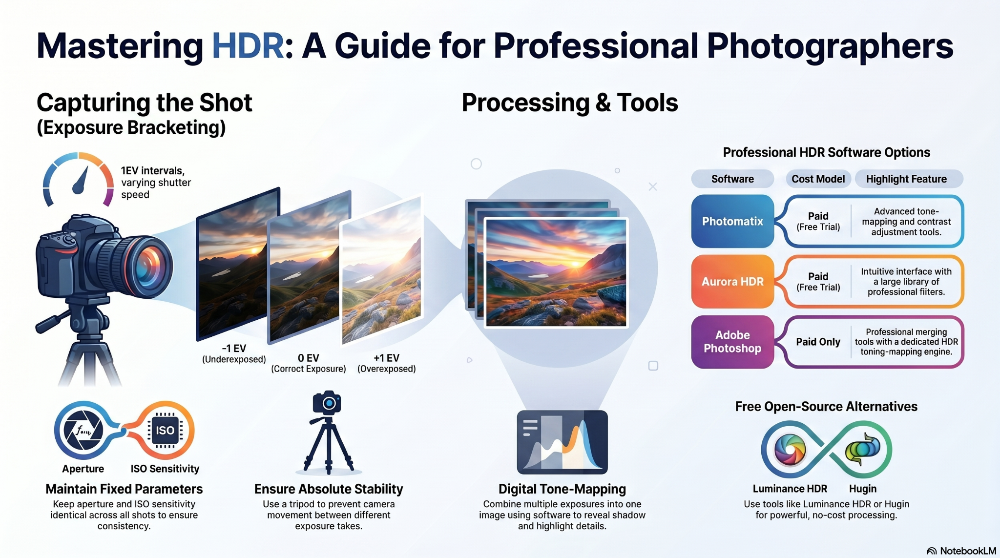
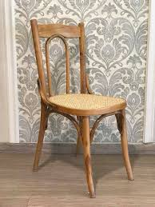

HassanMarji
Architect · Digital Media Trainer
— Hassan Marji
04 / About

One practice.
Many visual languages.
Education and professional training have also formed an important part of his career. As a certified instructor for technologies and platforms including Adobe, Autodesk, and Apple, he has delivered specialized training for institutions, broadcasters, production companies and universities.
A life in images.
01 / Selected Work
Selected work
02 / Practice
One practice. Many visual languages.
03 / Knowledge
Knowledge in visual form.


Click a card to turn the page.